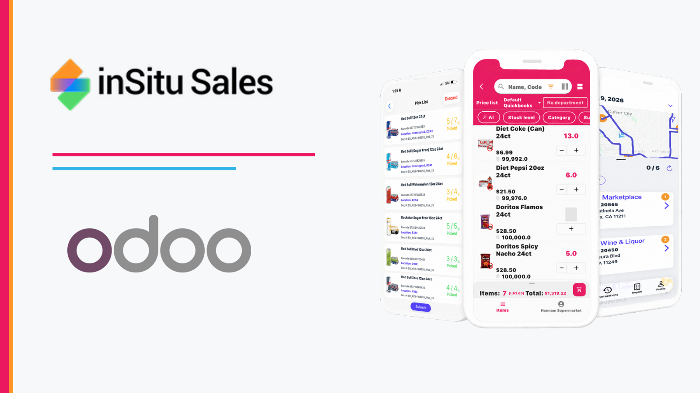
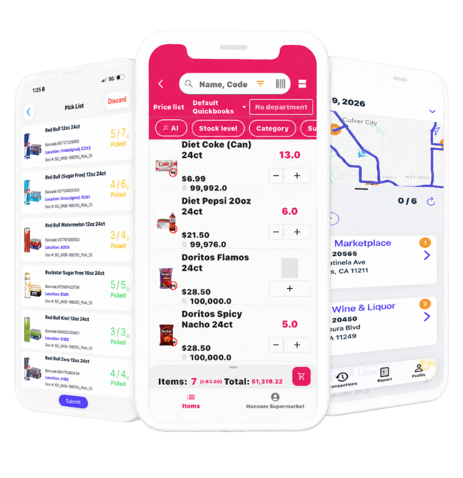
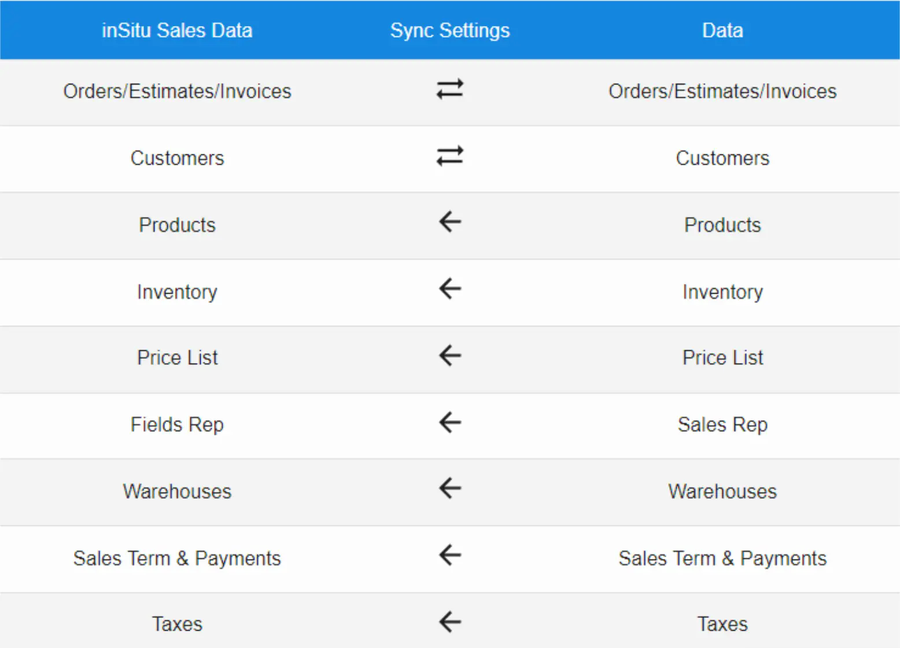

Odoo 16+ connector
Give route sales teams, presales reps, and B2B customers access to inventory availability and customer-specific pricing. Field reps can keep taking orders in the mobile app online or offline.

The supported connection method
For Odoo Online, Odoo.sh, and on-premise environments, support requires a successful connection through Odoo's authenticated external API using every parameter below.
The hosting type does not determine support. Odoo Online, Odoo.sh, and on-premise are supported only when the customer can provide all connection parameters and the integration validates successfully. Odoo Online external API access requires an Odoo Custom plan.
Important: installing this optional Python addon does not replace the required inSitu Sales configuration and does not make an incompatible environment supported.
Sign in to the inSitu Sales website, open Integration > Odoo, and enter:
Username
Password or API key
URL
Database Name
Company
Save and validate
Save the authentication settings first to load the available company list. If the parameters cannot be entered, the company list cannot load, or validation fails, that Odoo environment is not supported. A dedicated integration user and API key are recommended.
Three connected selling motions
Whether an order starts on a route, with a presales rep, or in the B2B portal, each team works from synchronized customer, product, inventory, and pricing data.
01 / DSD
Help route teams work online or offline as they check available inventory and account pricing, capture orders, invoice customers, and support delivery workflows.
02 / PRESALES
Give presales reps the customer history, product availability, and negotiated pricing they need to build accurate orders before fulfillment.
03 / B2B ECOMMERCE
Give authorized buyers a self-service catalog with their pricing and inventory visibility so replenishment does not wait for a sales visit.

Inventory and pricing everywhere
Connect selling workflows to the Odoo data that determines what can be sold, to whom, and at what price.
The data behind every order
The connector maps the commercial and operational data required across DSD, presales, and B2B ecommerce.
Products
Inventory
Customer pricing
Warehouses
Price lists
Taxes
Customers
Sales orders
Invoices
Delivery addresses
Order lines
Payments
One connected operation
DSD, presales, and B2B ecommerce share the same customer, product, inventory, and pricing foundation. Customers and transactions can move in both directions while Odoo remains the source of record.

Integration onboarding required
An active inSitu Sales subscription is required. Our team will help confirm compatibility and configure credentials through an approved support channel.